IncoCloud
The window IncoCloud leads you to the Wizard that lets you backup your IncoPOS database securely to the cloud in real time, without interruption of your work. It automatically synchronizes the information from your multiple work locations even without fast and reliable internet connection. With it you can have all the information available from every store or office to your accountants or management staff all the time.
The IncoCloud window also can be opened with keyboard shortcut Shift+Ctrl+I.
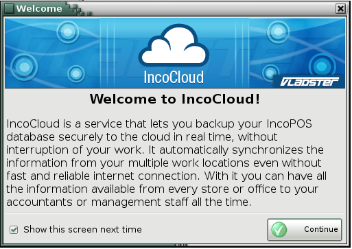
The window Login apperas after selecting the Continue button. It is necessary to enter an e-mail and password.
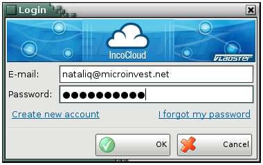
If you haven`t got a IncoCloud user, you can creat a new from a Creat New IncoCloud User.
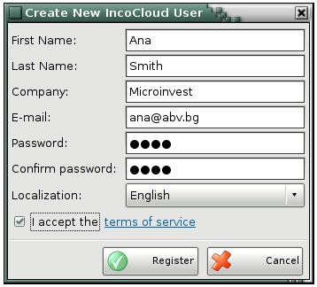
After you entered all the necessary information, you will receive an e-mail with activation code.
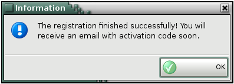
If you have forgotten your password for access, it can be restored/sent by I forgot my password.
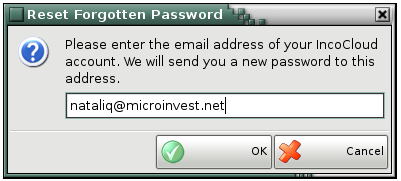
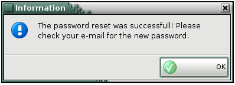
The main Settings window is used for adding databases, users, locations, services and licensing.
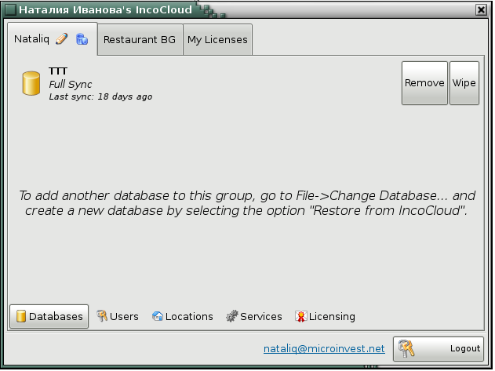
Creat a new IncoCloud group window:
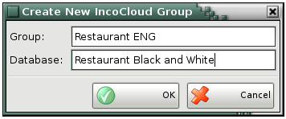
The window of the new group is divided into separate tabs:
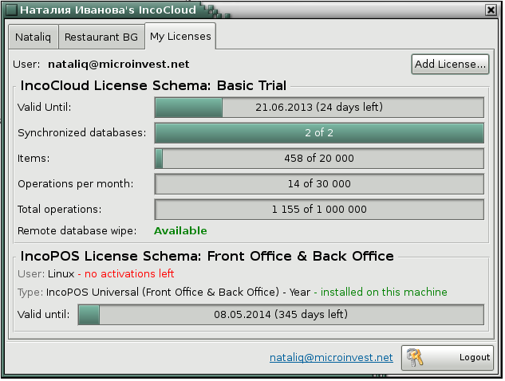
You can add users with different access levels in the created group.
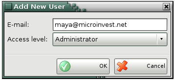
You can add different types of licenses in the tab My License.When you are using a button Add license, you can add licenses which are valid for IncoPOS too.
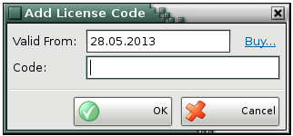
There are two types of services that you can srat to use if you have the required license.
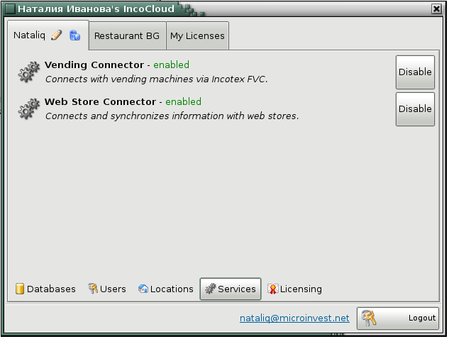
�2006-2015 Microinvest, All rights reserved